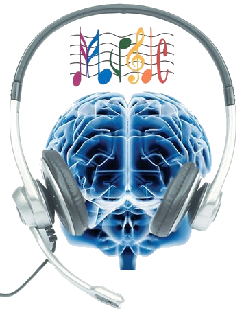

El Diccionario recoge la palabra "música" como: Arte de combinar los sonidos en una secuencia temporal atendiendo a las leyes de la armonía, la melodía y el ritmo, o de producirlos con instrumentos musicales, aunque también la define como un conjunto de sonidos sucesivos combinados según este arte, que por lo general producen un efecto estético o expresivo y resultan agradables al oído.
Es pues cabe obviar que no hay que ser un lince para darse cuenta de que la música es más que sonidos producidos por el hombre, se trata de una expresión artística tan importante para nuestras vidas como cualquier otra cosa.
Por esta y por otras muchas razones he decidido dedicar esta página web a la música en una amplia variedad de sus vertientes

Que las notas musicales “generen” energía no es un problema. El problema viene cuando esta energía no puede gastarse realizando actividad física. En ese sentido, la “música fuerte” es magnífica para situaciones que exijan conductas enérgicas o competitivas.
Asimismo, las notas musicales tienen la capacidad para relajarnos. Se logra con aquellos géneros que tienen ritmos más regulares, lentos y el volumen no es tan alto. Algunas piezas de música clásica, instrumental o pop suave contribuyen a tranquilizarnos. Se emplean incluso en salas donde se llevan a cabo radioterapias o tratamientos médicos agresivos.
Dentro de los principales efectos positivos están los siguientes:
No todos los efectos de la música son positivos; muchos creen que estudiar o escribir con música es bueno, ayuda, pero como lo demostraron en un artículo publicado hace poco en Applied Cognitive Psychology, eso produce una disminución en el rendimiento. Lo mejor en esos casos, dicen los autores es el silencio. Si lo vemos ahora desde el punto de vista de la noche, de las salidas, una investigación francesa en 2008 reveló que la música fuerte en bares incentiva a la persona a consumir más alcohol en menos tiempo. Por lo tanto hay que saber medirse y no dejarse llevar tanto por las melodías.